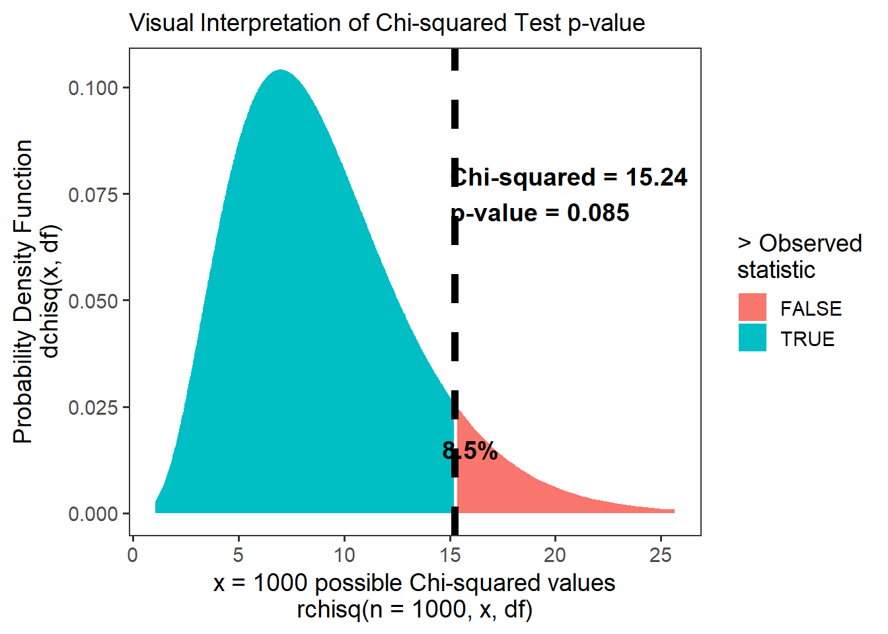

9 Statistical Techniques for Exponential Distributions
9.1 Getting Started
In this workshop, we’re going to examine several key tools that will help you (1) cross-tabulate failure data over time, (2) use statistics to determine whether an archetypal distribution (eg. exponential) fits your data sufficiently, (3) how to estimate the failure rate \(\lambda\) from tabulated data, and (4) how to plan experiments for product testing. Here we go!
9.1.1 Load Packages
Let’s start by loading the dplyr package, which will let us mutate(), filter(), and summarize() data quickly. We’ll also load mosaicCalc, for taking derivatives and integrals (eg. D() and antiD()).
9.1.2 Our Data
In this workshop, we’re going to continue working with a data.frame called masks. Let’s examine a hypothetical sample of n = 50 masks produced by Company X to measure how many hours it took for each part of the mask to break.
Please import the masks.csv data.frame below. Each row is a mask, with its own unique id. Columns describe how many hours it took for the left_earloop to snap, the right_earloop to snap, the nose wire to snap, and the fabric of the mask to tear.
## Rows: 50
## Columns: 5
## $ id <dbl> 1, 2, 3, 4, 5, 6, 7, 8, 9, 10, 11, 12, 13, 14, 15, 16, 1…
## $ left_earloop <dbl> 6, 16, 46, 4, 1, 5, 32, 35, 27, 3, 4, 7, 1, 20, 22, 17, …
## $ right_earloop <dbl> 12, 1, 17, 14, 19, 8, 18, 14, 5, 8, 8, 2, 12, 7, 20, 4, …
## $ wire <dbl> 4, 1, 8, 29, 23, 8, 10, 38, 11, 31, 7, 4, 3, 33, 13, 2, …
## $ fabric <dbl> 177, 462, 65, 405, 2483, 1064, 287, 2819, 1072, 288, 863…
9.2 Factors in R
For the next section, you’ll need to understand factors.
Factors are ordered vectors. They are helpful in
ggplotand elsewhere for tellingRwhat order to interpret things in.You can make your own vector into a
factorusingfactor(vector, levels = c("first", "second", "etc")).
# Make character vector
myvector <- c("surgical", "KN-95", "KN-95", "N-95", "surgical")
# Turn it into a factor
myfactor <- factor(myvector, levels = c("N-95", "KN-95", "surgical"))
# check it
myfactor## [1] surgical KN-95 KN-95 N-95 surgical
## Levels: N-95 KN-95 surgicalfactors can be reduced to numeric vectors using as.numeric(). This returns the level for each value in the factor.
## myfactor mynum
## 1 surgical 3
## 2 KN-95 2
## 3 KN-95 2
## 4 N-95 1
## 5 surgical 3# for example, N-95, which was ranked first in the factor, receives a 1 anytime the value N-95 appears
9.3 Crosstabulation
Sometimes, we might want to tabulate failures in terms of meaningful units of time, counting the total failures every 5 hours, every 24 hours, etc. Let’s learn how!
d1 <- data.frame(t = masks$left_earloop) %>%
# classify each value into 5-point width bins (0 to 5, 6-10, 11-15, etc.)
# then convert it to a numeric ranking of categories from 1 to n bins
mutate(label = cut_interval(t, length = 5))
# Let's take a peek
d1 %>% glimpse()## Rows: 50
## Columns: 2
## $ t <dbl> 6, 16, 46, 4, 1, 5, 32, 35, 27, 3, 4, 7, 1, 20, 22, 17, 8, 18, 1…
## $ label <fct> "(5,10]", "(15,20]", "(45,50]", "[0,5]", "[0,5]", "[0,5]", "(30,…Step 2: Tabulate Observations per Bin.
d2 <- d1 %>%
# For each bin label
group_by(label, .drop = FALSE) %>%
# Get total observed rows in each bin
# .drop = FALSE records factor levels in label that have 0 cases
summarize(r_obs = n())
d2 %>% glimpse()## Rows: 11
## Columns: 2
## $ label <fct> "[0,5]", "(5,10]", "(10,15]", "(15,20]", "(20,25]", "(25,30]", "…
## $ r_obs <int> 17, 13, 3, 7, 2, 2, 3, 0, 0, 1, 2Step 3: Get bounds and midpoint of Bins
Last, we might need the bounds (upper and lower value), or the midpoint. Here’s how!
d3 <- d2 %>%
# Get bin ranking, lower and upper bounds, and midpoint
mutate(
bin = as.numeric(label),
lower = (bin - 1) * 5,
upper = bin * 5,
midpoint = (lower + upper) / 2)
# Check it!
d3## # A tibble: 11 × 6
## label r_obs bin lower upper midpoint
## <fct> <int> <dbl> <dbl> <dbl> <dbl>
## 1 [0,5] 17 1 0 5 2.5
## 2 (5,10] 13 2 5 10 7.5
## 3 (10,15] 3 3 10 15 12.5
## 4 (15,20] 7 4 15 20 17.5
## 5 (20,25] 2 5 20 25 22.5
## 6 (25,30] 2 6 25 30 27.5
## 7 (30,35] 3 7 30 35 32.5
## 8 (35,40] 0 8 35 40 37.5
## 9 (40,45] 0 9 40 45 42.5
## 10 (45,50] 1 10 45 50 47.5
## 11 (50,55] 2 11 50 55 52.5
Learning Check 1
Question
A small start-up is product testing a new super-effective mask. They product tested 25 masks over 60 days. They contract you to analyze the masks’ lifespan data, recorded below as the number of days to failure.
# Lifespan in days
supermasks <- c(1, 2, 2, 2, 3, 3, 4, 4, 5, 9, 13, 15, 17, 19,
20, 21, 23, 24, 24, 24, 32, 33, 33, 34, 54)Cross-tabulate the lifespan distribution in intervals of
7 days.What’s the last 7-day interval?
How many masks are expected to fail within that interval?
What percentage of masks are expected to fail within 28 days?
[View Answer!]
- Cross-tabulate the lifespan distribution in intervals of 7 days.
## # A tibble: 8 × 6
## label r_obs bin lower upper midpoint
## <fct> <int> <int> <dbl> <dbl> <dbl>
## 1 [0,7] 9 1 0 7 3.5
## 2 (7,14] 2 2 7 14 10.5
## 3 (14,21] 5 3 14 21 17.5
## 4 (21,28] 4 4 21 28 24.5
## 5 (28,35] 4 5 28 35 31.5
## 6 (35,42] 0 6 35 42 38.5
## 7 (42,49] 0 7 42 49 45.5
## 8 (49,56] 1 8 49 56 52.5- What’s the last 7-day interval?
## # A tibble: 1 × 6
## label r_obs bin lower upper midpoint
## <fct> <int> <int> <dbl> <dbl> <dbl>
## 1 (49,56] 1 8 49 56 52.5## # A tibble: 1 × 6
## label r_obs bin lower upper midpoint
## <fct> <int> <int> <dbl> <dbl> <dbl>
## 1 (49,56] 1 8 49 56 52.5## # A tibble: 1 × 6
## label r_obs bin lower upper midpoint
## <fct> <int> <int> <dbl> <dbl> <dbl>
## 1 (49,56] 1 8 49 56 52.5- How many masks are expected to fail within that interval?
# Find the count of masks to fail `r_obs` within that interval
a %>% filter(bin == max(bin)) %>% select(label, r_obs)## # A tibble: 1 × 2
## label r_obs
## <fct> <int>
## 1 (49,56] 1- What percentage of masks are expected to fail within 28 days?
a %>%
# Calculate cumulative failures...
mutate(r_cumulative = cumsum(r_obs)) %>%
# Calculate percent of cumulative failures, divided by total failures
mutate(percent = cumsum(r_obs) / sum(r_obs)) %>%
# Filter to just our failures within 28 days
filter(midpoint <= 28)## # A tibble: 4 × 8
## label r_obs bin lower upper midpoint r_cumulative percent
## <fct> <int> <int> <dbl> <dbl> <dbl> <int> <dbl>
## 1 [0,7] 9 1 0 7 3.5 9 0.36
## 2 (7,14] 2 2 7 14 10.5 11 0.44
## 3 (14,21] 5 3 14 21 17.5 16 0.64
## 4 (21,28] 4 4 21 28 24.5 20 0.8
9.4 Estimating Lambda
Sometimes, we don’t have access to the full raw data of times to failure for a product. Often, we only have access to cross-tabulated data released by companies. How then are we supposed to analyze product failure and reliability, if we cannot compute it directly? Even if we do not have raw data, we can still estimate the failure rate \(\lambda\) for a component. Here’s a few ways!
9.4.1 Lambda from Complete Sample
If we have a complete sample of data (eg. not censored), then we can just calculate: $ = $.
## [1] 0.07485039.4.2 \(\hat{\lambda}\) from Cross-Tabulation
Alternatively, if our data is censored or pre-tabulated into groups, we may need to use the midpoint and count of failures in each bin to calculate the failure rate \(\lambda\). But, because this is an estimate, subject to error, we call it \(\hat{\lambda}\) (said “lambda-hat”). Here are the 3 kinds of cross-tabulated samples you might encounter.
Tabulated, No Censoring: tallied up in equally sized bins. All products eventually fail, yielding complete sample of times to failure.
Tabulated, Type I Censoring: experiment stops when time \(t\) reaches \(limit\).
Tabulated, Type II Censoring: experiment stops when number of units failed \(n_{failed}\) reaches \(limit\).
For example, if we receive just the d3 data.frame we made above, how do we estimate \(\lambda\) from it?
We will need:
\(r\): total failures (
sum(r_obs))\(n\): total observations (failed or not) (provided; otherwise, \(n = r\))
\(\sum_{i=1}^{r}{t_i}\): total unit-hours (
sum(midpoint*r_obs))\(T\): timestep of (1) last failure observed (sometimes written \(t_r\)) or (2) last timestep recorded; usually obtained by
max(midpoint).Unless some cases do not fail, \((n - r)t_z\) will cancel out as
0.
\[ \hat{\lambda} = \frac{ r }{ \sum_{i=1}^{r}{t_i} + (n - r)t_z} \]
# Let's calculate it!
d4 <- d3 %>%
summarize(
r = sum(r_obs), # total failures
hours = sum(midpoint*r_obs), # total failure-hours
n = r, # in this case, total failures = total obs
tz = max(midpoint), # end of study period
# Calculate lambda hat!
lambda_hat = r / (hours + (n - r)*tz))## [1] 0.0748503
Learning Check 2
Question
The same startup testing that super-effective mask needs to estimate their failure rate, but they only have crosstabulated data. They’ve provided it to you below, using a tribble() (another dplyr way to write a data.frame).
Estimate \(\hat{\lambda}\) from the cross-tabulated data, knowing that they tested 25 masks over 60 days.
a = tribble(
~bin, ~label, ~r_obs, ~lower, ~upper,
1, '[0,7]', 9, 0, 7,
2, '(7,14]', 2, 7, 14,
3, '(14,21]', 5, 14, 21,
4, '(21,28]', 4, 28, 35,
5, '(28,35]', 4, 28, 35,
6, '(35,42]', 0, 35, 42,
7, '(42,49]', 0, 42, 49,
8, '(49,56]', 1, 49, 56
)
a## # A tibble: 8 × 5
## bin label r_obs lower upper
## <dbl> <chr> <dbl> <dbl> <dbl>
## 1 1 [0,7] 9 0 7
## 2 2 (7,14] 2 7 14
## 3 3 (14,21] 5 14 21
## 4 4 (21,28] 4 28 35
## 5 5 (28,35] 4 28 35
## 6 6 (35,42] 0 35 42
## 7 7 (42,49] 0 42 49
## 8 8 (49,56] 1 49 56[View Answer!]
Estimate \(\hat{\lambda}\) from the cross-tabulated data, knowing that they tested 25 masks over 60 days.
## # A tibble: 1 × 5
## r days n tz lambda_hat
## <dbl> <dbl> <dbl> <dbl> <dbl>
## 1 25 444. 25 52.5 0.0562
9.4.3 Confidence Intervals for \(\hat{\lambda}\)
Also, our estimate of lambda might be slightly off due to random sampling error. (Every time you take a random sample, there’s a little change, right?) That’s why we call it \(\hat{\lambda}\). So, let’s build a confidence interval around our estimate.
9.4.3.1 \(k\) factor
We can build confidence intervals around our point estimate \(\hat{\lambda}\) using something called a \(k\) factor. We will weight \(\hat{\lambda}\) by a factor \(k\), to get a slightly higher/slightly lower estimated failure rate that shows our confidence interval.
This factor \(k\) may be greater depending on (1) the total number of failures \(r\) and (2) our level of acceptable error (\(alpha\)).
Like any statistic, our estimate \(\hat{\lambda}\) has a full sampling distribution of \(\hat{\lambda}\) values we could get due to random sampling error, with some of them occurring more frequently than others.
We want to find the upper and lower bounds around the 90%, 95%, or perhaps 99% most common (middle-most) values in that sampling distribution. So, if \(alpha = 0.10\), we’re going to get a 90% confidence interval (dubbed \(interval\)) spanning from the 5%~95% of that sampling distribution.
## [1] 0.95## [1] 0.059.4.3.2 \(k\) factor by Type of Data
- No Censoring: If we have complete data (all observations failed!), using this formula to calculate factor \(k\):
- Time-Censoring: If we only record up to a specific time (eg. planning an experiment), use this formula to calculate factor \(k\), setting as the degrees of freedom \(df = 2(r+1)\).
So, since we do not have time censoring in our d4 dataset, we can go ahead an calculate the df = 2*r and compute the 90% lower and upper confidence intervals.
d4 %>%
summarize(
lambda_hat = lambda_hat,
r = r,
k_upper = qchisq(0.95, df = 2*r) / (2*r),
k_lower = qchisq(0.05, df = 2*r) / (2*r),
lower = lambda_hat * k_lower,
upper = lambda_hat * k_upper)## # A tibble: 1 × 6
## lambda_hat r k_upper k_lower lower upper
## <dbl> <int> <dbl> <dbl> <dbl> <dbl>
## 1 0.0769 50 1.24 0.779 0.0599 0.0956
Learning Check 3
Question
A small start-up is product testing a new super-effective mask. They product tested 25 masks over 60 days. They contracted you to analyze the cross-tabulated data, tabulated in intervals of 7 days. You have an estimate for \(\hat{\lambda}\), provided below.
Estimate a 95% confidence interval for \(\hat{\lambda}\).
[View Answer!]
Estimate a 95% confidence interval for \(\hat{\lambda}\).
# Get data...
b = tibble(r = 25, days = 416.5, n = 25, tz = 52.5, lambda_hat = 0.06002401 )
# And estimate lambda hat!
c <- b %>%
summarize(
lambda_hat = lambda_hat,
r = r,
k_upper = qchisq(0.975, df = 2*r) / (2*r),
k_lower = qchisq(0.025, df = 2*r) / (2*r),
lower = lambda_hat * k_lower,
upper = lambda_hat * k_upper)
# Check it
c## # A tibble: 1 × 6
## lambda_hat r k_upper k_lower lower upper
## <dbl> <dbl> <dbl> <dbl> <dbl> <dbl>
## 1 0.0600 25 1.43 0.647 0.0388 0.08579.5 Planning Experiments
When developing a new product, you often need to make that product meet regulatory standards, eg. meet a specific \(\lambda\) failure rate requirement. But as we just learned, estimated failure rates are dependent on the sample size of products and time range evaluated, and are subject to error. Even if we have a product whose true failure rate should be within range, our experiment might yield a \(\hat{\lambda}\) that varies from it by chance and exceeds regulatory requirements. Further, (most) all experiments cost time and money! So we probably want to keep our experiment as short as possible (timely results) and use as few products as possible (less expensive). We often need to answer the following questions:
What’s the minimum time we should run our test to produce a failure rate \(\hat{\lambda}\) that we can say with confidence is within limits?
What’s the minimum sample size we can run our test on to produce a failure rate \(\hat{\lambda}\) that we can say with confidence is within limits?
How confident are we that our product has a failure rate within a specific limit \(\hat{\lambda}\)?
When planning an experiment, we can use the following formula to determine the necessary values of \(r\), \(t\), \(lambda\), \(k\), or \(n\) for our experiment to function:
\[ \frac{r}{n \ t} \times k_{r, 1 - \alpha} = \hat{\lambda} \]
Note: Experiment planning by definition makes time-censored datasets, so you’ll need your adjusted \(k\) formula so that \(df = 2(r+1)\).
9.5.1 Example: Minimum Sample Size
Let’s try an example. Imagine a company wants to test a new line of masks. Your company can budget 500 hours to test these masks’ elastic bands, and they accept that up to 10 of these masks may break in the process. Company policy anticipates a failure rate of just 0.00002 masks per hour, and we want to be 90% confidence that the failure rate will not exceed this level. (But it’s fine if it goes below that level.)
If we aim to fit within these constraints, how many masks need to be tested in this product trial?
# Max failures
r = 10
# Number of hours
t = 500
# Max acceptable failure rate
lambda = 0.00002
# Calcuate a one-tailed confidence interval
alpha = 0.10
ci = 1 - alpha
# Use these ingredients to calculate the factor k, using time-censored rule df = 2*(r+1)
k = qchisq(ci, df = 2*(r+1)) / (2*r)
# Reformat
# r / (t*n) * k = lambda
n = k * r / (lambda * t)
# Check it!
n## [1] 1540.664Looks like you’ll need a sample of about 1541 masks to be able to fit those constraints.
9.6 Chi-squared
Chi-squared (\(\chi^{2}\)) is a special statistic used frequently to evaluate the relationship between two categorical variables. In this case, the first variable is the type of data (observed vs. model), while the second variable is bin.
9.6.1 Compute Chi-squared from scratch
Back in Workshop 2, we visually compared several distributions to an observed distribution, to determine which fits best. But can we do that statistically? One way to do this is to chop our observed data into bins of length equal width using cut_interval() from ggplot2. We must specify:
Step 1 Crosstabulate Observed Values into Bins.
# Let's repeat our process from before!
c1 <- data.frame(t = masks$left_earloop) %>%
# Part 1.1: Split into bins
mutate(interval = cut_interval(t, length = 5)) %>%
# Part 1.2: Tally up observed failures 'r_obs' by bin
group_by(interval, .drop = FALSE) %>%
summarize(r_obs = n()) %>%
mutate(
bin = 1:n(), # give each bin a numeric id from 1 to inf
# bin = as.numeric(interval), # you could alternatively turn the factor numeric
lower = (bin - 1) * 5,
upper = bin * 5,
midpoint = (lower + upper) / 2)Step 2: Calculate Observed and Expected Values per Bin.
Sometimes you might only receive tabulated data, meaning a table of bins, not the original vector. In that case, start from Step 2!
# Get any parameters you need (might need to be provided if only tabulated data)
mystat = masks %>% summarize(
# failure rate
lambda = 1 / mean(left_earloop),
# total number of units under test
n = n())
# Get your 'model' function
f = function(t, lambda){ 1 - exp(-1*lambda*t) }
# Note: pexp(t, rate) is equivalent to f(t, lambda) for exponential distribution
# Now calculate expected units to fail per interval, r_exp
c2 = c1 %>%
mutate(
# Get probability of failure by time t = upper bound
p_upper = f(t = upper, lambda = mystat$lambda),
# Get probability of failure by time t = lower bound
p_lower = f(t = lower, lambda = mystat$lambda),
# Get probability of failure during the interval,
# i.e. between these thresholds
p_fail = p_upper - p_lower,
# Add in total units under test
n_total = mystat$n,
# Calculate expected units to fail in that interval
r_exp = n_total * p_fail)
# Check it!
c2## # A tibble: 11 × 11
## interval r_obs bin lower upper midpoint p_upper p_lower p_fail n_total
## <fct> <int> <int> <dbl> <dbl> <dbl> <dbl> <dbl> <dbl> <int>
## 1 [0,5] 17 1 0 5 2.5 0.312 0 0.312 50
## 2 (5,10] 13 2 5 10 7.5 0.527 0.312 0.215 50
## 3 (10,15] 3 3 10 15 12.5 0.675 0.527 0.148 50
## 4 (15,20] 7 4 15 20 17.5 0.776 0.675 0.102 50
## 5 (20,25] 2 5 20 25 22.5 0.846 0.776 0.0699 50
## 6 (25,30] 2 6 25 30 27.5 0.894 0.846 0.0481 50
## 7 (30,35] 3 7 30 35 32.5 0.927 0.894 0.0331 50
## 8 (35,40] 0 8 35 40 37.5 0.950 0.927 0.0227 50
## 9 (40,45] 0 9 40 45 42.5 0.966 0.950 0.0156 50
## 10 (45,50] 1 10 45 50 47.5 0.976 0.966 0.0108 50
## 11 (50,55] 2 11 50 55 52.5 0.984 0.976 0.00740 50
## # ℹ 1 more variable: r_exp <dbl># We only need a few of these columns; let's look at them:
c2 %>%
# interval: get time interval in that bin
# r_obs: Get OBSERVED failures in that bin
# r_exp: Get EXPECTED failures in that bin
# n_total: Get TOTAL units, failed or not, overall
select(interval, r_obs, r_exp, n_total)## # A tibble: 11 × 4
## interval r_obs r_exp n_total
## <fct> <int> <dbl> <int>
## 1 [0,5] 17 15.6 50
## 2 (5,10] 13 10.7 50
## 3 (10,15] 3 7.38 50
## 4 (15,20] 7 5.08 50
## 5 (20,25] 2 3.49 50
## 6 (25,30] 2 2.40 50
## 7 (30,35] 3 1.65 50
## 8 (35,40] 0 1.14 50
## 9 (40,45] 0 0.782 50
## 10 (45,50] 1 0.538 50
## 11 (50,55] 2 0.370 50Step 3: Calculate Chi-squared Statistic
Chi-squared here represents the sum of ratios for each bin. Each ratio is the (1) squared difference between the observed and expected value over (2) the expected value. Ranges from 0 to infinity. The bigger (more positive) the statistic, the greater difference between the observed and expected data.
Degrees of Freedom (df) is used as the standard deviation in the chi-squared distribution, to help evaluate how extreme is our chi-squared statistic?
Chi-squared Distribution is a distribution of squared deviations from a normal distribution centered at 0. This means it only has positive values.
c3 <- c2 %>%
summarize(
# Calculate Chi-squared statistic
chisq = sum((r_obs - r_exp)^2 / r_exp),
# Calculate number of bins (rows)
nbin = n(),
# Record number of parameters used (jjust lambda)
np = 1,
# Calculate degree of freedom
df = nbin - np - 1)
# Check it!
c3## # A tibble: 1 × 4
## chisq nbin np df
## <dbl> <int> <dbl> <dbl>
## 1 15.2 11 1 9Step 4: Calculate p-values and confidence intervals
Last, let’s use the pchisq() function to evaluate the CDF of the Chi-squared distribution. We’ll find out:
p_value: what’s the probability of getting a value greater than or equal to (more extreme than) our observed chi-squared statistic?“statistically significant”: if our observed statistic is more extreme than most possible chi-squared statistics (eg. >95% of the distribution), it’s probably not due to chance! We call it ‘statistically significant.’
# Calculate area remaining under the curve
c4 <- c3 %>%
mutate(p_value = 1 - pchisq(q = chisq, df = df))
# Check
c4## # A tibble: 1 × 5
## chisq nbin np df p_value
## <dbl> <int> <dbl> <dbl> <dbl>
## 1 15.2 11 1 9 0.0847For a visual representation:

9.6.2 Building a Chi-squared function
That was a lot of work! It might be more helpful for us to build our own function doing all those steps. Here’s a function I built, which should work pretty flexibly. You can improve it, tweak it, or use it for your own purposes. Our function get_chisq() is going to need several kinds of information.
- Our exponential failure function
f - Our parameters, eg. failure rate
lambda - Total number of parameters (if exponential, 1)
- Our total number of units under test
n - Then, we’ll need a observed vector of times to failure
t, plus a constantbinwidth(previously, 5). - Or, if our data is pre-crosstabulated, we can ignore
tandbinwidthand just supply a data.framedataof crosstabulated vectorslower,upper, andr_obs.
For example, these inputs might look like this:
# Get your 'model' function
f = function(t, lambda){ 1 - exp(-1*lambda*t) }
# Parameters
# lambda = 1 / mean(masks$left_earloop)
# number of parameters
# np = 1
# total number of units (sometimes provided, if the data is time-censored)
# n_total = length(masks$left_earloop)
# AND
# Raw observed data + binwidth
# t = masks$left_earloop
# binwidth = 5
# OR
# Crosstabulated data (c1 is an example we made before)
# data = c1 %>% select(lower, upper, r_obs)Then, we could write out the function like this! I’ve added some fancy @ tags below just for notation, but you can ditch them if you prefer. This is a fairly complex function! I’ve shared it with you as an example to help you build your own for your projects.
#' @name get_chisq
#' @title Function to Get Chi-Squared!
#' @name Tim Fraser
#' If observed vector...
#' @param t a vector of times to failure
#' @param binwidth size of intervals (eg. 5 hours) (Only if t is provided)
#' If cross-tabulated data...
#' @param data a data.frame with the vectors `lower`, `upper`, and `r_obs`
#' Common Parameters:
#' @param n_total total number of units.
#' @param f specific failure function, such as `f = f(t, lambda)`
#' @param np total number of parameters in your function (eg. if exponential, 1 (lambda))
#' @param ... fill in here any named parameters you need, like `lambda = 2.4` or `rate = 2.3` or `mean = 0, sd = 2`
get_chisq = function(t = NULL, binwidth = 5, data = NULL,
n_total, f, np = 1, ...){
# If vector `t` is NOT NULL
# Do the raw data route
if(!is.null(t)){
# Make a tibble called 'tab'
tab = tibble(t = t) %>%
# Part 1.1: Split into bins
mutate(interval = cut_interval(t, length = binwidth)) %>%
# Part 1.2: Tally up observed failures 'r_obs' by bin
group_by(interval, .drop = FALSE) %>%
summarize(r_obs = n()) %>%
# Let's repeat our process from before!
mutate(
bin = 1:n(),
lower = (bin - 1) * binwidth,
upper = bin * binwidth,
midpoint = (lower + upper) / 2)
# Otherwise, if data.frame `data` is NOT NULL
# Do the cross-tabulated data route
}else if(!is.null(data)){
tab = data %>%
mutate(bin = 1:n(),
midpoint = (lower + upper) / 2)
}
# Part 2. Calculate probabilities by interval
output = tab %>%
mutate(
p_upper = f(upper, ...), # supplied parameters
p_lower = f(lower, ...), # supplied parameters
p_fail = p_upper - p_lower,
n_total = n_total,
r_exp = n_total * p_fail) %>%
# Part 3-4: Calculate Chi-Squared statistic and p-value
summarize(
chisq = sum((r_obs - r_exp)^2 / r_exp),
nbin = n(),
np = np,
df = nbin - np - 1,
p_value = 1 - pchisq(q = chisq, df = df) )
return(output)
}Finally, let’s try using our function!
Using a raw observed vector t:
get_chisq(
t = masks$left_earloop, binwidth = 5,
n_total = 50, f = f, np = 1, lambda = mystat$lambda)## # A tibble: 1 × 5
## chisq nbin np df p_value
## <dbl> <int> <dbl> <dbl> <dbl>
## 1 15.2 11 1 9 0.0847Or using crosstabulated data:
## # A tibble: 1 × 5
## chisq nbin np df p_value
## <dbl> <int> <dbl> <dbl> <dbl>
## 1 15.2 11 1 9 0.0847Using our pexp function instead of our homemade f function:
## # A tibble: 1 × 5
## chisq nbin np df p_value
## <dbl> <int> <dbl> <dbl> <dbl>
## 1 15.2 11 1 9 0.0847Or using a different function that is not exponential!
## # A tibble: 1 × 5
## chisq nbin np df p_value
## <dbl> <int> <dbl> <dbl> <dbl>
## 1 171. 11 2 8 0
Learning Check 4
Question
A small start-up is product testing a new super-effective mask. They product tested 25 masks over 60 days. They contracted you to analyze the masks’ lifespan data, recorded below as the number of days to failure. If you were to make projections from this data, you’d want to be sure that you know the lifespan distribution of this data with confidence. Do these masks’ lifespan distribution fit an exponential distribution? Follow the steps below to find out.
# Lifespan in days
supermasks <- c(1, 2, 2, 2, 3, 3, 4, 4, 5, 9, 13, 15, 17, 19,
20, 21, 23, 24, 24, 24, 32, 33, 33, 34, 54)Cross-tabulate the lifespan distribution in intervals of
7 days.Estimate \(\hat{\lambda}\) from the cross-tabulated data, knowing that they tested 25 masks over 60 days.
Using the cross-tabulated data, do these masks’ lifespan distribution fit an exponential distribution, or does their distribution differ to a statistically significant degree from the exponential? How much? (eg. statistic and p-value).
[View Answer!]
- Cross-tabulate the lifespan distribution in intervals of
7 days.
# Days to failure
a <- data.frame(t = supermasks) %>%
# Step 1: Split into bins
mutate(label = cut_interval(t, length = 7)) %>%
# Step 2: Tally up by bin
group_by(label, .drop = FALSE) %>%
summarize(r_obs = n()) %>%
mutate(
bin = 1:n(),
lower = (bin - 1) * 7,
upper = bin * 7,
midpoint = (lower + upper) / 2)
a## # A tibble: 8 × 6
## label r_obs bin lower upper midpoint
## <fct> <int> <int> <dbl> <dbl> <dbl>
## 1 [0,7] 9 1 0 7 3.5
## 2 (7,14] 2 2 7 14 10.5
## 3 (14,21] 5 3 14 21 17.5
## 4 (21,28] 4 4 21 28 24.5
## 5 (28,35] 4 5 28 35 31.5
## 6 (35,42] 0 6 35 42 38.5
## 7 (42,49] 0 7 42 49 45.5
## 8 (49,56] 1 8 49 56 52.5- Estimate \(\hat{\lambda}\) from the cross-tabulated data, knowing that they tested 25 masks over 60 days.
# Let's estimate lambda-hat!
b <- a %>%
# Get the midpoint...
mutate(midpoint = (upper - lower)/2 + lower) %>%
# Estimate lambda
summarize(
r = sum(r_obs), # total failures
days = sum(midpoint*r_obs), # total failure-days
n = r, # in this case, total failures = total obs
tz = max(midpoint), # end of study period
# Calculate lambda hat!
lambda_hat = r / (days + (n - r)*tz))
# view it
b## # A tibble: 1 × 5
## r days n tz lambda_hat
## <int> <dbl> <int> <dbl> <dbl>
## 1 25 416. 25 52.5 0.0600- Using the cross-tabulated data, do these masks’ lifespan distribution fit an exponential distribution, or does their distribution differ to a statistically significant degree from the exponential? How much? (eg. statistic and p-value).
# Get your 'model' function
f = function(t, lambda){ 1 - exp(-1*lambda*t) }
# Get lambda-hat from b$lambda_hat
# Step 3a: Calculate Observed vs. Expected
get_chisq(data = a, n_total = 25, np = 1, f = f, lambda = b$lambda_hat)## # A tibble: 1 × 5
## chisq nbin np df p_value
## <dbl> <int> <dbl> <dbl> <dbl>
## 1 9.85 8 1 6 0.131# Step 3b: Calculate Chi-squared if we had received the vector supermasks all along, assuming that were the whole population
# Get lambda from directly from the data
f = function(t, lambda){ 1 - exp(-1*lambda*t) }
get_chisq(t = supermasks, binwidth = 7,
n_total = 25, np = 1, f = f,
lambda = 1 / mean(supermasks) )## # A tibble: 1 × 5
## chisq nbin np df p_value
## <dbl> <int> <dbl> <dbl> <dbl>
## 1 9.72 8 1 6 0.137The slight difference in results is due to b$lambda_hat being slightly different from 1 / mean(supermasks), the true empirical failure rate.